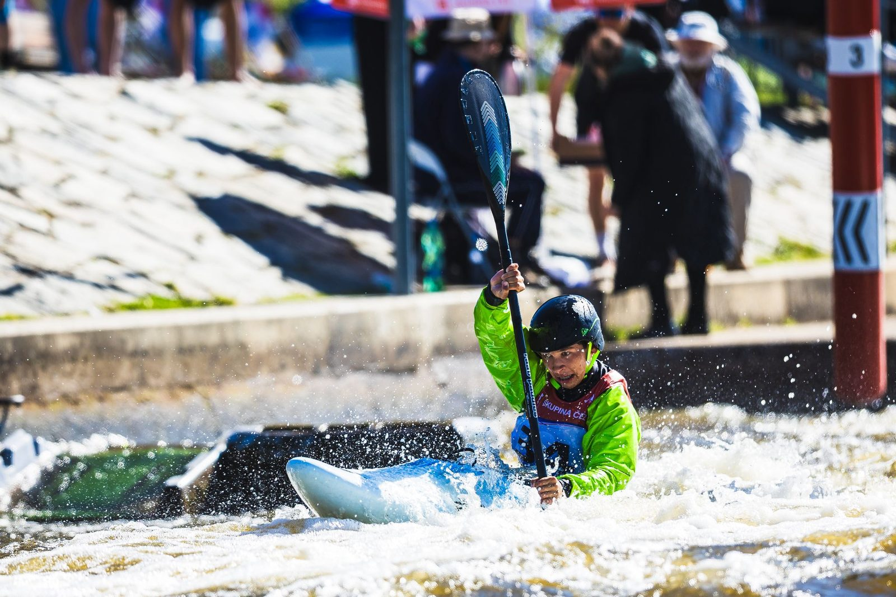

Konec dubna (25. a 26. 4. 2026) patřil v domácím kalendáři jedné z divácky nejatraktivnějších a nejtvrdších disciplín – kajak krosu (závody X1). První až třetí závod Českého poháru nabídl nesmlouvavé souboje, rychlé individuální jízdy a nelítostné vyřazovací finálové jízdy. Na startu samozřejmě nechyběli ani zástupci a odchovanci SKVS České Budějovice.
Jakub Krejčí v elitě září: Dvakrát stříbrný!
Hvězdný budějovický odchovanec Jakub Krejčí (jezdící za Duklu Praha) ukázal, že mu kontaktní kros svědčí stejně dobře jako klasický slalom. Po oba dva dny předváděl v nabité elitní kategorii mužů špičkové výkony a jen těsně mu uniklo celkové prvenství:
- V sobotní individuální kvalifikaci (time trial) zajel absolutně nejrychlejší a s přehledem ji ovládl. Ve vyřazovacím finále pak vybojoval vynikající 2. místo, když nestačil pouze na vítězného Martina Panzera.
- V neděli svůj výkon zopakoval. V individuální jízdě skončil druhý a stříbro bral i v konečném finále, kde jej překonal pouze Jan Bárta.
Dvě stříbrné medaile ze dvou závodů jsou fantastickým vstupem do krosové sezóny a potvrdil svou nominaci do reprezentace i v této kategorii.
Budějovické naděje v juniorských bojích
Pro mládežníky a dorostence z SKVSČB byly závody především obrovskou školou a možností porovnat síly se staršími a zkušenějšími závodníky v nevyzpytatelné kontaktní disciplíně.
- Martin Petr (K1 muži): Z našich mladých kajakářů si vedl nejlépe. V sobotní juniorské kategorii obsadil 14. místo (31. v celkovém individuálním pořadí). V neděli své umístění ještě vylepšil a bral 12. pozici mezi juniory (27. celkově).
- Adam Rezek (K1 muži): V sobotu se umístil na 17. příčce mezi juniory. Nedělní závod mu sedl lépe a posunul se na 14. místo v juniorském hodnocení.
- Lenka Petrová (K1 ženy): Jediná zástupkyně budějovického klubu v ženském krosu bojovala statečně. V sobotu vybojovala cenné 9. místo v nabité juniorské kategorii (19. absolutně). V neděli pak obsadila 13. příčku mezi juniorkami (23. absolutně).
- Matěj Krejčí (K1 muži): Sbíral především cenné zkušenosti z ostrých soubojů. V sobotu zapsal 20. místo v juniorech , v neděli pak skončil na 27. juniorské příčce
Děkujeme za podporu!
Naše účast na celorepublikových závodech, stejně jako každodenní poctivá příprava naší mládeže na divoké vodě, by se neobešla bez stabilního zázemí a silných partnerů v zádech. Obrovské poděkování proto patří Jihočeskému kraji a statutárnímu městu České Budějovice. Vážíme si vaší podpory, díky které můžeme vychovávat další generace úspěšných vodních slalomářů a hrdě reprezentovat náš region!

